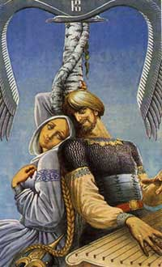
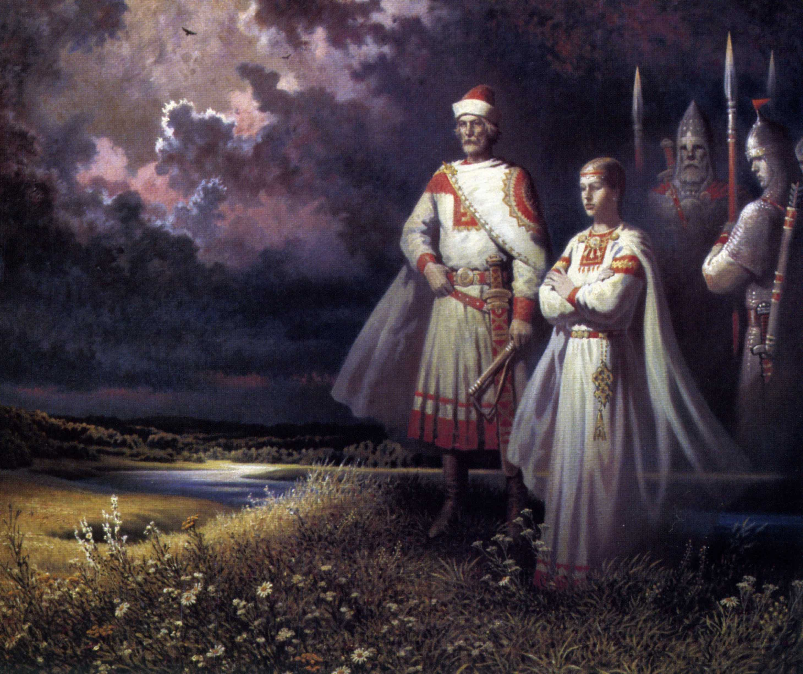
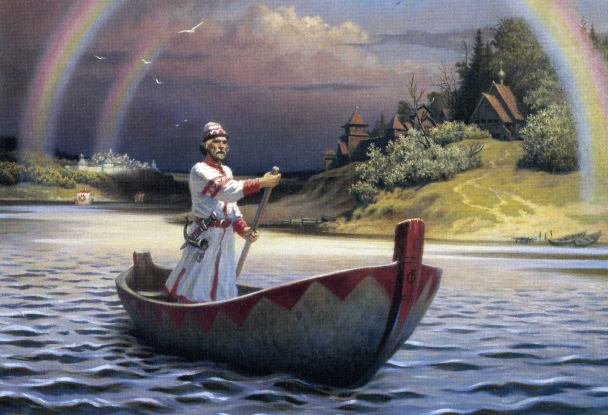
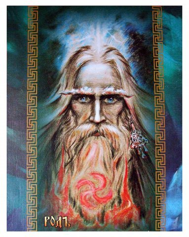
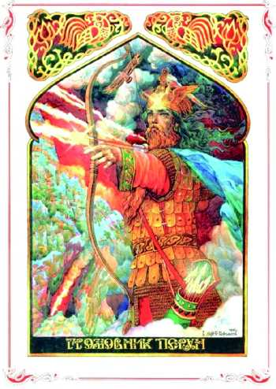
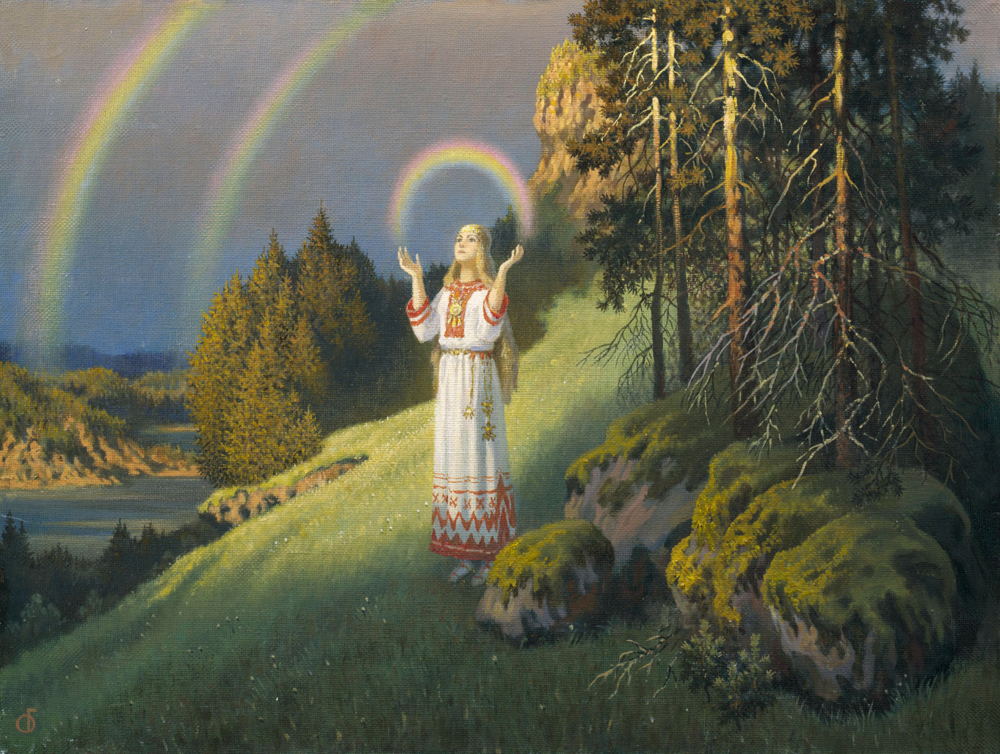
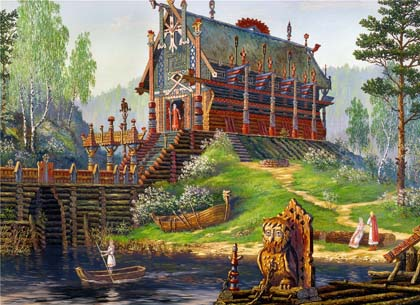

Русское Наследие Предков
Сквозь тысячелетние разрухи
Горела правда на костре.
Пытались уничтожить Русских
Но Дух Родной лишь закалился на огне!
Хотели растоптать да выжечь память
О корнях славных, о родных Богах,
Но в генах – сути Их, и значит
Всё возродят наследники в Родах.
О, корни Древа северной страны
Вплетаете узор Величества Земли
В нём свет и мудрость, тайны бытия
Небесный взор всем Родного Отца.
Наследие – зов Предков и родных Богов!
Истоков солнечных и звёздной колыбели
В сиянье радужных цветов
О древе Рода песни Души наши пели…
2003 год
Родной зов
Менять мировоззрение людей –
Работа не «из легких»
Ведь сотни, тысячи мирских семей,
На протяжении уж многих лет и дней,
Живут понятиями мыслей «не далеких».
Ведь на ладони – Солнца Свет,
Как ясный образ мирозданья,
Рука Творца нас создала,
По мысли – образу – сознанье.
О, сила мысли, чистой красоты
О, Сила Духа, Божьего рассвета
Течёте в искрах широты души,
Живете мощью вы Космического ветра.
В плеяде утренних зарниц
Бутон набухший расцветает,
То солнце золотых ресниц
О новой эре всех оповещает!
Взывает души к ясности и Свету
Где тонкости космической любви
Преподнесут победу,
Где Лики Прародителей – Богов,
А связи с Ними нету!
Нет связи у России с Русскими Богами,
Затоптаны все корни кандалами.
В сердцах людей растерянны ключи,
А в головах пустые лишь мечты!
Из временных пространств столетий
Зов Предков слышен, тех мгновений
Где песни тихой колыбели,
Ее нам мамы наши пели.
В той мелодичности,
Как в птичьей трели
Все засыпали, все росли, сильнели!
Души цветы, как солнышки блестели,
Краса от Матушки-Земли текла,
И Духом Божьим наполнялись
Все реки, и леса, поля,
Так наши прародители Богов всех прославляли,
Проснитесь, внуки Божьи – Русичи!
И Дух в вас прежний,
Он добр и искренен,
В любви он – нежный,
В трудах – он труженик прилежный,
В защитах – воин Он отважны,
И в хороводах, песнях - распрекрасный!
В разрыве времени Его хотели чужаки украсть,
И загубить да выжечь,
Но до Небес им не достать.
Ведь Русский Дух – то Божья Рать,
Земле – Сыны,
И лишь от них идет ей благодать.
Как можно затоптать сей Дух в сыру Землю,
Напротив, Силу даст Она ему ко дню,
Ко дню Рождения Руси
Куда вернулись Лики Бога,
Где ширь, простор Русской Души,
Где милость льется нам от Рода.
Трещат умы в раздумьях долгих:
Чем силен же русский человек?
И прост, как ясный день, ответ:
По Совести живет сыновней, с Божьей Вестью
И потому и выжил в грозный век.
Но Дух сей крепкий не загубить,
Ведь Сила в нём – Первоистока,
Что умеет по-настоящему любить!
2001 г.
Силушка родная
О, Русские! Наследники своих Отцов,
Наследники своих дедов, своих Богов!
Как так случилось, что забыли Их имена,
Небесной Суть – Родов
По млечному пути Сварога
От самого Истока
Течет молочная река -
Кормилица для вас Она,
И шлёт для чад своих любовь Богов,
И ведает, что вновь
Услышите, вернёте мощь души её цветов.
И красотою расцветёт
Сознание русского народа,
Где вспомнят Имена
Что Свет на Землю посылают,
Вас нежностью своей оберегают.
В плеяде утренней Звезды,
Что на рассвете Солнца,
В искристых капельках Росы,
Увидите там образы – Лучи.
Проникнетесь душою всей своей
Увидите там человечества всю колыбель.
Постойте босиком на Матушке-Земле,
Почувствуйте же Силу, Волю,
Дух закаленный, как меч в Огне.
Стрибожий ветер вас обдует
И с легкостью перенесётесь в даль кругов,
Услышите вы Гимны-Прославления,
Для русских всех Родных Богов,
И сказы их и наставления.
Где Имена Их торжествуют красотой
В звучанье там почувствуете
Вновь оживленье и Покой.
Там Прародитель-РОД
И Лада-Богородица, Сварог,
И Полководец сам Перун,
И Макошь-Матушка
Плетёт судьбинушку Она,
Сияют в вышине Семаргл и Коляда,
Дарует благо сам Даждьбог,
Чтоб процветали Его внуки -
Русский весь народ.
Великой Силой золотой
Ликует Солнце-РА,
И ты постой.
Вдохни энергии родной,
Разбудит пусть души застой.
Открой же очи в небо голубое,
В его простор и вышину,
И пусть войдёт во глубину
Сердечка ищущего Света,
Родится заново, не умирая, вновь душа,
Истоки, корни РОДА возродя!
2002 год
Родовая память
В тревоге сердце,
Душа болит
Зачем я на Земле?
Вопрос возник в душе.
Всё переплелось и сдвинулось всё с места
Где времени река
Забушевала с родных гор она.
Те, горы древние – пути Богов родных
И переход найти,
Не потерять ту связь,
К истокам вечным подойти!
Где есть моё начало?
Где есть мои Бога?
Вопрос сама себе задала
Измучившись, душа.
Ответ рождается в сознанье
И в сердце новый ритм идёт…
Ведь, то по генам – родовая память
Знать о себе даёт!
Огонь вновь зажигается в душе!
Где Свет – Любовь носящий,
И меч хранящий,
Те знания в добре!
О, Дух божественный и Воля,
О, Совесть – связь божественная – Суть Богов!
И сила солнечная – небесная дорога,
Души прекрасной – защита и оплот!
Январь 2004 год.
Солнечный знак Рода
В солнечных дорогах
Есть звуки образа
В них Веды многолики
Где символ – свастика
В ней Свет и Жизнь
И оберёг и мудрость
В ней чистота творящего огня
И память предков на Земле давно живущих
И заповедь небесного Отца!
О, Сила, Родная – Богов Природы,
Дающая нам жизнь!
Да славны будут
Мудрости Её Истоки!
Великий Гимн всей Прави
Народ Славянский запоёт!
Январь 2004 год
Перунов День!
Вновь воссияла Мудрость Перуна!
Исток словесный дарят Небеса,
Где Образы Богов, Творящих чудеса,
Где с Силой - Дух Божественный
Скрепляется волна!
Росой умоет Землю,
Где Белая Вода
И разнесётся Правда
Из уст Волхвов на многие лета.
И Веды берегя молнией Огня
Любовь, нам всем неся,
Где благо - процветание народа
Где Со-Весть это связь с Великим Богом РОДОМ!
Январь 2004 год
Уроки летописи
Приду я в лес,
К Яриле - Солнцу руки протяну,
И тихо я в цветочном аромате постою.
Прославлю я своих Родных Богов
Чтоб взор Их ясный и прекрасный
Коснулся русских берегов.
Свои я мысли обращаю
К Тебе, Великий Род, Создатель наш!
Вот так начнётся мой рассказ.
Столетья длятся многие разрухи,
Но не от добрых рук, скорей от скуки
Всё от безделья, наглости и лени,
Хотят поставить русских на колени.
И войны, споры, и разлад,
Что люди мирно жить-то не хотят?
А суть вся в том,
Что Веды Рода позабыли.
И свой закон по всей Земле установили.
Но пусть останется в истории всё это.
Ну, а для нас хороший всем урок
Мы научились на своём примере
Плохо и не говорите о родной вы вере.
Россия настрадалась уж сполна,
Понять одно, пришла пора,
Что Русские Бога и
Предки наши - Суть одна!
И русским людям очень дорога!
Победу нам всегда несёт "У-РА!"
Где семицветной радугой добра
Струится в душах к потомкам от Отца.
Та связь сильна,
Никем непобедима,
Что в генах Света песнь поёт,
И лишь она всем озаренье многим принесёт.
Вся мудрость в наше время состоит:
По совести и чести нужно жить
И этим дорожить,
Тогда услышат Русские Бога.
И через ваши Души и Сердца
Воплотятся многие Великие Рода.
И над Россией воссияет вновь
Коловрат и Посолонь,
Великий Небесный Огонь!
Чтоб всё это понять,
Себя духовно нужно развивать.
Откроются вам новые секреты,
Все тайны, древние заветы.
Узнаете исток корней своих родов,
Освободится разум от оков,
И сила воли поднимет Дух ваш
До Родных Богов!
2001 год
Ведическая Русь
Ведическая Русь – забытая страна народом,
Где истинная суть
Дарящаяся Богом Родом!
Поля свободы и раздолья
Где русской щедростью
Душа поет
И Дух Свободы – крепкой воли
Сознанье красоту дает!
Струящийся Родник с Небес
Вновь возродился,
И луч Души из всей России
По всей Земле полился!
Ее мечта – о Родовых поместьях –
Искра Творящего Огня
И возродить их вскоре сможет
Каждая Душа!
Что нитью златой соткана
Божественною Силой
С высот дождем сошла Она!
Богами по-наследству своим детям
Вся вложена любовь,
Что в генах Со-Весть
Ко времени заговорила вновь!
Ведическая Русь –
Богов Родных поля
Проснется весь народ пусть!
Взошла Заря!
Всей Силою Небесной
Умоется Земля
Где Океан Чудесный
По Сути всей – Роса!
Творимое всем взором
В мгновенье тишины
Неповторимым медосбором
Нектар поселится Души!
Преображения красόты
Увидится вокруг себя
Наполнятся пустоты
Мелодией Воды, Огня!
И в танце окружающей природы
Раскроется душа
Цветком Небесным и Воздушным
Родные корни обретя!
2003 год